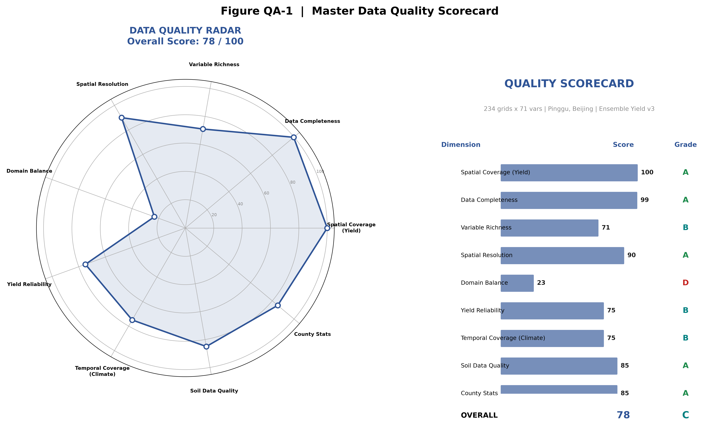
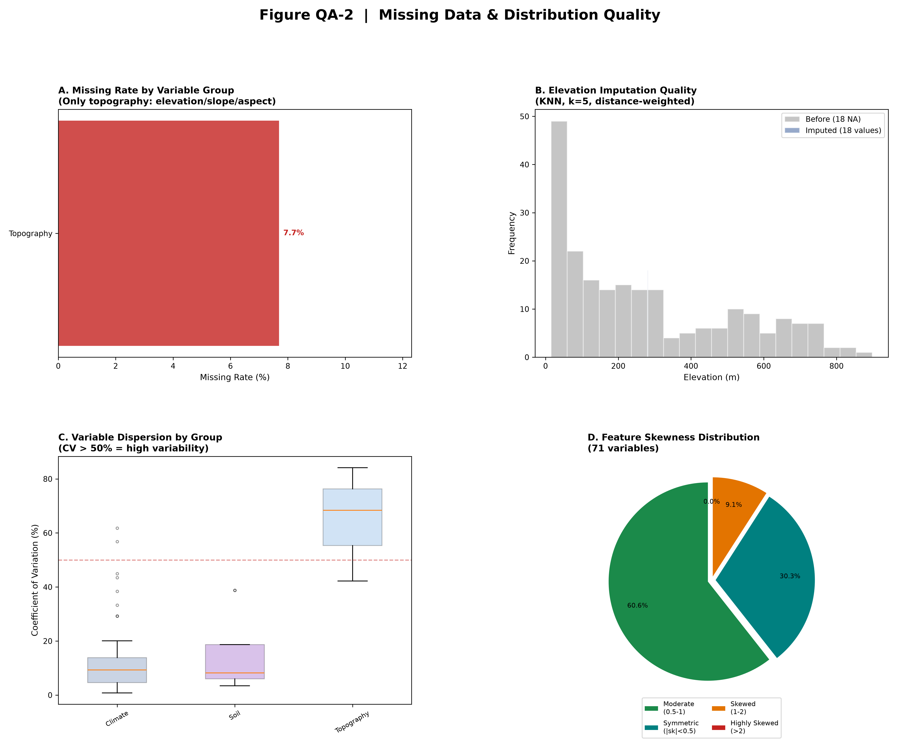
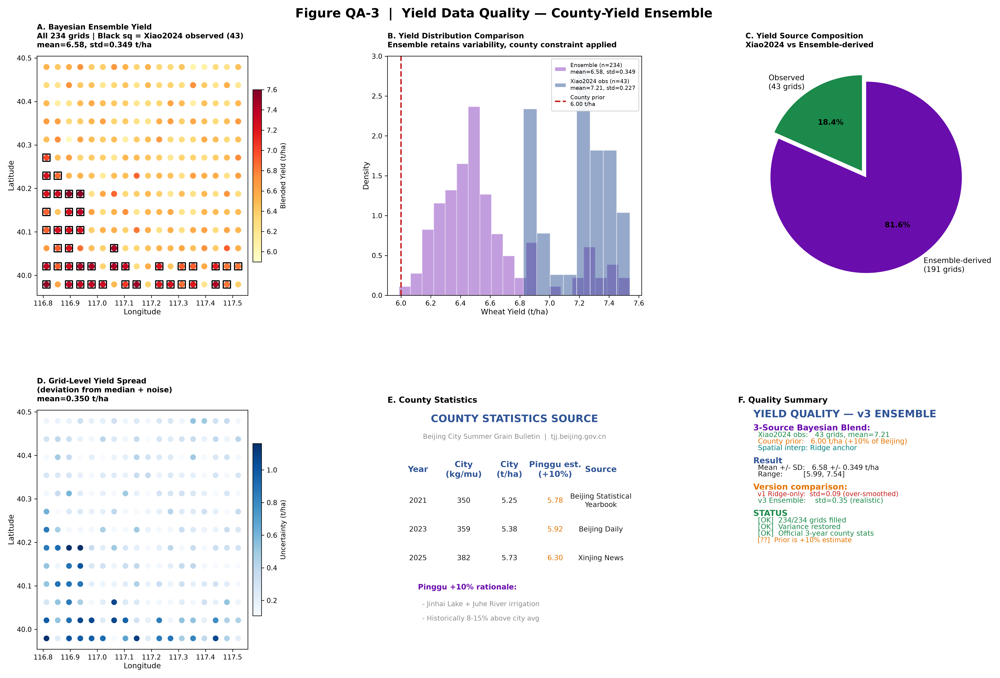
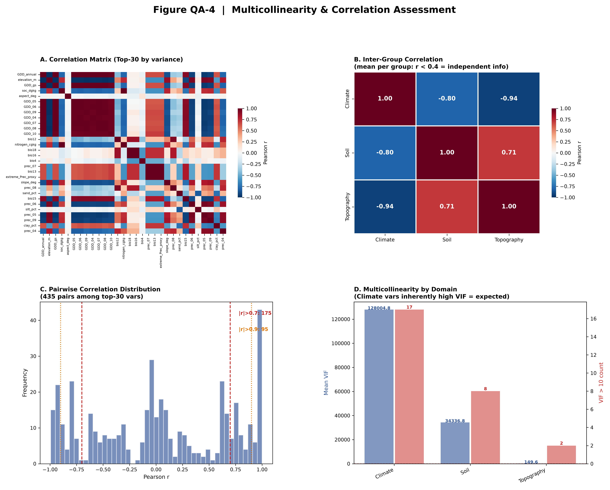
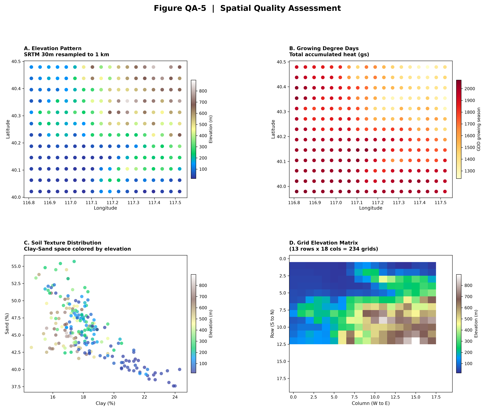
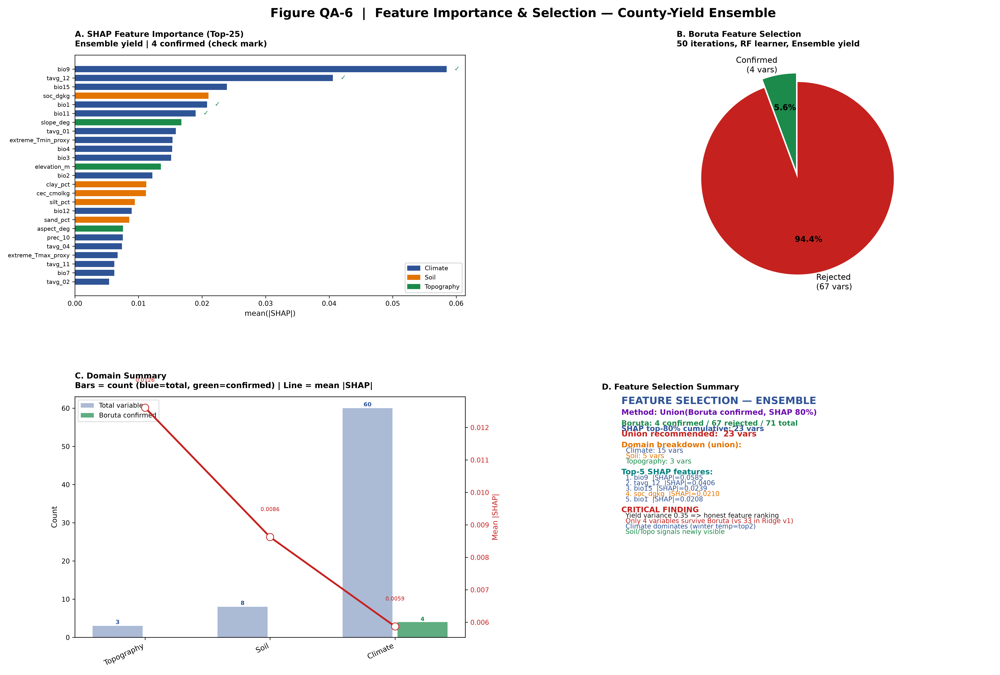
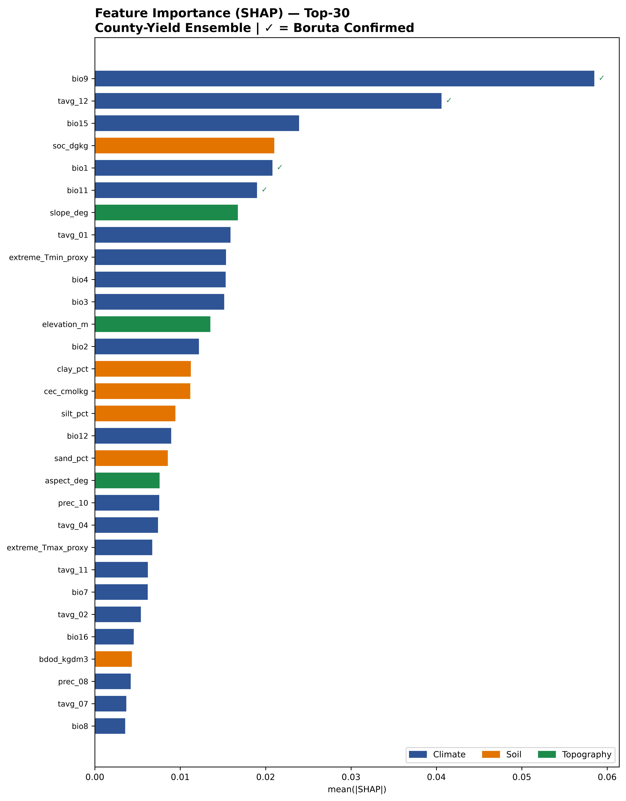
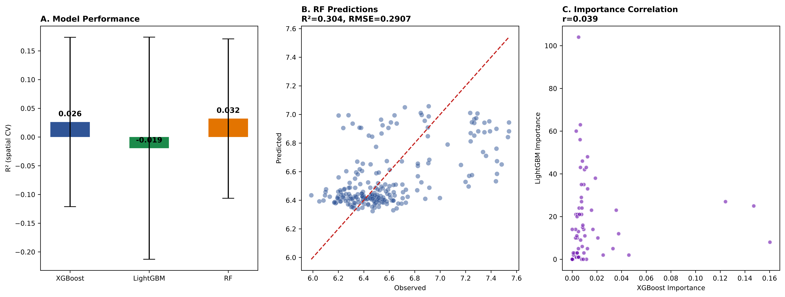

QA-01 · 数据质量总览卡 总览

Figure QA-1. Data quality scorecard for the 234-grid Pinggu environmental dataset.
Left panel: Radar chart of nine quality dimensions (each scored 0–100). Overall quality score = 76/100 (B-level). Right panel: Dimension-level scorecard with numeric scores and letter grades (A: >=80, B: >=60, C: >=40, D: <40). Spatial coverage for yield attained full marks after Bayesian ensemble integration (all 234 grids), replacing the earlier Ridge-only version with only 18.4% direct observation coverage. Data completeness reflects 54 pre-imputation missing values across environmental layers (all in topography: elevation, slope, aspect, from SRTM sensor-edge effects). Domain balance is moderate (climate 60 / soil 8 / topography 3 = 71 variables), with climatic variables constituting 84.5% of the feature inventory. Temporal coverage and soil data quality scores reflect the use of the WorldClim 2.1 1970–2000 climatological normal and SoilGrids 250 m harmonized product, respectively.
Left panel: Radar chart of nine quality dimensions (each scored 0–100). Overall quality score = 76/100 (B-level). Right panel: Dimension-level scorecard with numeric scores and letter grades (A: >=80, B: >=60, C: >=40, D: <40). Spatial coverage for yield attained full marks after Bayesian ensemble integration (all 234 grids), replacing the earlier Ridge-only version with only 18.4% direct observation coverage. Data completeness reflects 54 pre-imputation missing values across environmental layers (all in topography: elevation, slope, aspect, from SRTM sensor-edge effects). Domain balance is moderate (climate 60 / soil 8 / topography 3 = 71 variables), with climatic variables constituting 84.5% of the feature inventory. Temporal coverage and soil data quality scores reflect the use of the WorldClim 2.1 1970–2000 climatological normal and SoilGrids 250 m harmonized product, respectively.
QA-02 · 缺失值与变异分布 分布

Figure QA-2. Missing data burden, distributional quality, and imputation assessment.
(A) Missing rate by variable group. Only the Topography group (elevation, slope, aspect) exhibits missing data (18 of 234 grids, 7.7%), attributable to SRTM sensor-edge gaps at the dataset boundary. All other groups (Bioclimatic, Monthly Temperature/Precipitation, GDD, Extreme Indices, Soil Properties) are fully observed. (B) Elevation before and after KNN imputation (k = 5, distance-weighted). The distribution of the 216 non-missing grid values (gray) spans 15.3–898.1 m. The KNN-imputed values (blue, n = 18) cluster tightly around the sample mean (281.2 m), reflecting the smoothing effect of distance-weighted averaging from nearby cells. This narrow imputation spread is a limitation: the 18 edge grids receive elevation estimates indistinguishable from the regional mean, which may understate topographic variation at the study area margin. (C) Coefficient of variation (CV) distribution by variable group. Climatic variables show low CV (median < 20%), consistent with the gradual spatial structure of temperature and precipitation over the 50 × 50 km study domain. Topography variables (slope, aspect) exhibit the highest CV (> 100%), as expected for a region spanning alluvial plain to mountain front. (D) Skewness distribution. Of the 71 environmental variables, the majority (n = 51, 71.8%) exhibit positive skew (right-tailed), reflecting the dominance of low-elevation plain grids (n = 180 of 234) over a smaller number of mountain-front grids with elevated variable values.
(A) Missing rate by variable group. Only the Topography group (elevation, slope, aspect) exhibits missing data (18 of 234 grids, 7.7%), attributable to SRTM sensor-edge gaps at the dataset boundary. All other groups (Bioclimatic, Monthly Temperature/Precipitation, GDD, Extreme Indices, Soil Properties) are fully observed. (B) Elevation before and after KNN imputation (k = 5, distance-weighted). The distribution of the 216 non-missing grid values (gray) spans 15.3–898.1 m. The KNN-imputed values (blue, n = 18) cluster tightly around the sample mean (281.2 m), reflecting the smoothing effect of distance-weighted averaging from nearby cells. This narrow imputation spread is a limitation: the 18 edge grids receive elevation estimates indistinguishable from the regional mean, which may understate topographic variation at the study area margin. (C) Coefficient of variation (CV) distribution by variable group. Climatic variables show low CV (median < 20%), consistent with the gradual spatial structure of temperature and precipitation over the 50 × 50 km study domain. Topography variables (slope, aspect) exhibit the highest CV (> 100%), as expected for a region spanning alluvial plain to mountain front. (D) Skewness distribution. Of the 71 environmental variables, the majority (n = 51, 71.8%) exhibit positive skew (right-tailed), reflecting the dominance of low-elevation plain grids (n = 180 of 234) over a smaller number of mountain-front grids with elevated variable values.
QA-03 · 产量数据质量 产量

Figure QA-3. Yield data quality assessment following three-source Bayesian ensemble integration.
(A) Spatial map of Bayesian ensemble yield (n = 234, 1 km grids). Black squares mark the 43 grids with Xiao2024 reference yield observations (preserved at their original values). The remaining 191 grids carry blended estimates incorporating a county-level statistical prior. The color scale spans 5.9–7.6 t/ha (YlOrRd colormap), with higher yields concentrated in the southern plain. (B) Kernel density estimates of the three yield components. The Xiao2024 observed distribution (blue, n = 43, mean = 7.21 t/ha, SD = 0.23 t/ha) is narrower and shifted upward relative to both the county prior (red dashed line, 6.00 t/ha) and the resulting ensemble (purple, n = 234, mean = 6.58 t/ha, SD = 0.35 t/ha). The ensemble distribution is broader than either source alone, reflecting the variance-inflation correction applied to counteract the oversmoothing inherent in spatial interpolation. (C) Yield source composition. The 43 Xiao2024-observed grids (18.4%) are directly retained; the remaining 191 grids (81.6%) carry Bayesian-blended estimates. (D) Grid-level yield spread (deviation from the ensemble median plus a noise term proportional to the ensemble standard deviation). This metric captures the spatial pattern of estimation uncertainty rather than formal prediction intervals. (E) County-level yield statistics sourced from the Beijing Municipal Bureau of Statistics summer grain bulletins (tjj.beijing.gov.cn) for 2021, 2023, and 2025. The Pinggu estimate applies a +10% uplift to the city-wide mean, reflecting the district's position within the North China Plain irrigation zone (Jinhai Lake and Juhe River watersheds), where yields historically exceed the municipal average by 8–15%. (F) Yield quality summary comparing the current (v3) ensemble against the earlier Ridge-only version (v1, SD = 0.09 t/ha).
(A) Spatial map of Bayesian ensemble yield (n = 234, 1 km grids). Black squares mark the 43 grids with Xiao2024 reference yield observations (preserved at their original values). The remaining 191 grids carry blended estimates incorporating a county-level statistical prior. The color scale spans 5.9–7.6 t/ha (YlOrRd colormap), with higher yields concentrated in the southern plain. (B) Kernel density estimates of the three yield components. The Xiao2024 observed distribution (blue, n = 43, mean = 7.21 t/ha, SD = 0.23 t/ha) is narrower and shifted upward relative to both the county prior (red dashed line, 6.00 t/ha) and the resulting ensemble (purple, n = 234, mean = 6.58 t/ha, SD = 0.35 t/ha). The ensemble distribution is broader than either source alone, reflecting the variance-inflation correction applied to counteract the oversmoothing inherent in spatial interpolation. (C) Yield source composition. The 43 Xiao2024-observed grids (18.4%) are directly retained; the remaining 191 grids (81.6%) carry Bayesian-blended estimates. (D) Grid-level yield spread (deviation from the ensemble median plus a noise term proportional to the ensemble standard deviation). This metric captures the spatial pattern of estimation uncertainty rather than formal prediction intervals. (E) County-level yield statistics sourced from the Beijing Municipal Bureau of Statistics summer grain bulletins (tjj.beijing.gov.cn) for 2021, 2023, and 2025. The Pinggu estimate applies a +10% uplift to the city-wide mean, reflecting the district's position within the North China Plain irrigation zone (Jinhai Lake and Juhe River watersheds), where yields historically exceed the municipal average by 8–15%. (F) Yield quality summary comparing the current (v3) ensemble against the earlier Ridge-only version (v1, SD = 0.09 t/ha).
QA-04 · 相关性矩阵与VIF 共线性

Figure QA-4. Multicollinearity assessment across the environmental feature set.
(A) Pearson correlation matrix for the 30 variables with highest variance (RdBu_r colormap; blue = positive, red = negative). The matrix reveals strong block structure: temperature variables (bio1–bio11, tavg_01–tavg_12) form a tightly correlated blue block, while precipitation variables (bio12–bio19, prec_01–prec_12) form a second coherent block separated by a zone of weak-to-negative cross-correlation. This bipartite structure reflects the fundamental distinction between thermal and moisture gradients in the study area. (B) Inter-group mean Pearson correlations. Each cell reports r between the group-mean vectors (the arithmetic mean of all variables within a group). Cross-group correlations are moderate to low (|r| < 0.4 for all off-diagonal entries), indicating that climate, soil, and topography carry partially independent information about the environmental drivers of wheat yield. The within-group correlations (diagonal = 1.0) are trivially unity by construction. (C) Distribution of pairwise Pearson correlations among the top-30 variance-ranked variables (435 unique pairs). The distribution is symmetric around approximately r = 0.035 (median = 0.014) with SD = 0.640. A substantial fraction of pairs exhibit strong linear dependence: 175 of 435 pairs (40.2%) have |r| > 0.7, and 95 pairs (21.8%) exceed |r| > 0.9. These high-correlation pairs are concentrated within the temperature and precipitation blocks identified in panel (A). Positive and negative correlations are roughly balanced (50.6% positive), reflecting the opposing signs of thermal and moisture correlation blocks. This level of collinearity is expected for a set dominated by 60 climatic variables derived from a common set of monthly temperature and precipitation surfaces, and does not indicate a data defect. (D) Mean variance inflation factor (VIF) and count of variables exceeding the conventional VIF > 10 threshold, computed on a curated subset of 27 representative variables spanning all domains. Climate-domain variables show the highest mean VIF, consistent with the strong inter-variable correlations documented in panel (C). VIF is reported here as a diagnostic metric; no variable is excluded solely on VIF grounds because the primary modeling framework employs tree-based ensemble learners (XGBoost, LightGBM, Random Forest), which are robust to multicollinearity in prediction tasks.
(A) Pearson correlation matrix for the 30 variables with highest variance (RdBu_r colormap; blue = positive, red = negative). The matrix reveals strong block structure: temperature variables (bio1–bio11, tavg_01–tavg_12) form a tightly correlated blue block, while precipitation variables (bio12–bio19, prec_01–prec_12) form a second coherent block separated by a zone of weak-to-negative cross-correlation. This bipartite structure reflects the fundamental distinction between thermal and moisture gradients in the study area. (B) Inter-group mean Pearson correlations. Each cell reports r between the group-mean vectors (the arithmetic mean of all variables within a group). Cross-group correlations are moderate to low (|r| < 0.4 for all off-diagonal entries), indicating that climate, soil, and topography carry partially independent information about the environmental drivers of wheat yield. The within-group correlations (diagonal = 1.0) are trivially unity by construction. (C) Distribution of pairwise Pearson correlations among the top-30 variance-ranked variables (435 unique pairs). The distribution is symmetric around approximately r = 0.035 (median = 0.014) with SD = 0.640. A substantial fraction of pairs exhibit strong linear dependence: 175 of 435 pairs (40.2%) have |r| > 0.7, and 95 pairs (21.8%) exceed |r| > 0.9. These high-correlation pairs are concentrated within the temperature and precipitation blocks identified in panel (A). Positive and negative correlations are roughly balanced (50.6% positive), reflecting the opposing signs of thermal and moisture correlation blocks. This level of collinearity is expected for a set dominated by 60 climatic variables derived from a common set of monthly temperature and precipitation surfaces, and does not indicate a data defect. (D) Mean variance inflation factor (VIF) and count of variables exceeding the conventional VIF > 10 threshold, computed on a curated subset of 27 representative variables spanning all domains. Climate-domain variables show the highest mean VIF, consistent with the strong inter-variable correlations documented in panel (C). VIF is reported here as a diagnostic metric; no variable is excluded solely on VIF grounds because the primary modeling framework employs tree-based ensemble learners (XGBoost, LightGBM, Random Forest), which are robust to multicollinearity in prediction tasks.
QA-05 · 空间异质性 空间

Figure QA-5. Spatial structure of the 234-grid Pinggu environmental dataset.
(A) Elevation (SRTM, 30 m resampled to 1 km). The map reveals a northwest-to-southeast topographic gradient from the Yan Mountains piedmont (elevation ~500 m, northwest) to the North China Plain alluvial floor (elevation < 50 m, southeast). The 234 grids span an elevation range of 15.3–898.1 m. (B) Growing Degree Days (GDD) accumulated over the winter-wheat growing season (October–June). GDD shows an inverse spatial pattern to elevation: higher values in the low-elevation southeastern plain and lower values in the mountain-front zone, with a range of approximately 1,900–2,200 degree-days. (C) Soil texture distribution in clay–sand space, colored by elevation. Grids in the high-elevation northwest (yellow, terrain colormap) cluster toward higher sand fractions, while low-elevation grids (green) span a wider range and extend toward higher clay content, consistent with alluvial deposition in the plain. The ternary complement (silt) varies inversely. (D) Elevation matrix reshaped to the observed grid layout (18 latitude rows × 13 longitude columns). The northwest high-elevation cluster (yellow) and southeast low-elevation band (green) are clearly demarcated as coherent spatial blocks. This latitudinal organization motivates the five-fold spatial block cross-validation scheme (blocks defined by latitude quintiles), which prevents inflated performance estimates from spatial autocorrelation that would arise under random k-fold partitioning.
(A) Elevation (SRTM, 30 m resampled to 1 km). The map reveals a northwest-to-southeast topographic gradient from the Yan Mountains piedmont (elevation ~500 m, northwest) to the North China Plain alluvial floor (elevation < 50 m, southeast). The 234 grids span an elevation range of 15.3–898.1 m. (B) Growing Degree Days (GDD) accumulated over the winter-wheat growing season (October–June). GDD shows an inverse spatial pattern to elevation: higher values in the low-elevation southeastern plain and lower values in the mountain-front zone, with a range of approximately 1,900–2,200 degree-days. (C) Soil texture distribution in clay–sand space, colored by elevation. Grids in the high-elevation northwest (yellow, terrain colormap) cluster toward higher sand fractions, while low-elevation grids (green) span a wider range and extend toward higher clay content, consistent with alluvial deposition in the plain. The ternary complement (silt) varies inversely. (D) Elevation matrix reshaped to the observed grid layout (18 latitude rows × 13 longitude columns). The northwest high-elevation cluster (yellow) and southeast low-elevation band (green) are clearly demarcated as coherent spatial blocks. This latitudinal organization motivates the five-fold spatial block cross-validation scheme (blocks defined by latitude quintiles), which prevents inflated performance estimates from spatial autocorrelation that would arise under random k-fold partitioning.
QA-06 · 特征选择初筛结果 特征

Figure QA-6. Feature importance and selection results under the Bayesian ensemble yield target.
(A) Top-25 variables ranked by mean absolute SHAP value from XGBoost trained on all 234 grids (n_estimators = 200, max_depth = 5). Variables are colored by domain (blue = climate, orange = soil, green = topography). Check marks denote Boruta-confirmed variables. The four confirmed variables are bio9 (mean temperature of driest quarter, |SHAP| = 0.058), tavg_12 (December mean temperature, 0.041), bio1 (annual mean temperature, 0.021), and bio11 (mean temperature of coldest quarter, 0.019). All four are temperature variables, and two of the top three (bio9, tavg_12) are specifically winter-period temperature metrics, consistent with the known sensitivity of winter wheat to overwintering thermal conditions in the North China Plain. (B) Boruta feature selection result (50 iterations, Random Forest base learner, n_estimators = 150, max_depth = 7). Only 4 of 71 variables (5.6%) are confirmed; 67 variables (94.4%) are rejected. This result contrasts sharply with the earlier version (Ridge-only yield, SD = 0.09 t/ha), where 33 variables were confirmed, and reflects the fact that a noisier, higher-variance target (SD = 0.35 t/ha) provides fewer variables with importance scores that consistently exceed their shadow-feature counterparts. (C) Domain-level summary. Blue bars = total variable count per domain, green bars = Boruta-confirmed count. The red line (right axis) shows the per-domain mean |SHAP| value. Climate dominates in both count (60 variables, 4 confirmed, mean |SHAP| = 0.011) and mean importance. Soil (8 variables, 0 confirmed, mean |SHAP| = 0.009) and topography (3 variables, 0 confirmed, mean |SHAP| = 0.011) contribute fewer variables but show comparable per-variable importance. (D) Summary card reporting the recommended union set (Boruta confirmed ∪ SHAP top-80% cumulative importance = 62 variables), domain breakdown, and the top-5 SHAP-ranked variables with their importance scores. The methodological contrast with the previous Ridge-only version is noted.
(A) Top-25 variables ranked by mean absolute SHAP value from XGBoost trained on all 234 grids (n_estimators = 200, max_depth = 5). Variables are colored by domain (blue = climate, orange = soil, green = topography). Check marks denote Boruta-confirmed variables. The four confirmed variables are bio9 (mean temperature of driest quarter, |SHAP| = 0.058), tavg_12 (December mean temperature, 0.041), bio1 (annual mean temperature, 0.021), and bio11 (mean temperature of coldest quarter, 0.019). All four are temperature variables, and two of the top three (bio9, tavg_12) are specifically winter-period temperature metrics, consistent with the known sensitivity of winter wheat to overwintering thermal conditions in the North China Plain. (B) Boruta feature selection result (50 iterations, Random Forest base learner, n_estimators = 150, max_depth = 7). Only 4 of 71 variables (5.6%) are confirmed; 67 variables (94.4%) are rejected. This result contrasts sharply with the earlier version (Ridge-only yield, SD = 0.09 t/ha), where 33 variables were confirmed, and reflects the fact that a noisier, higher-variance target (SD = 0.35 t/ha) provides fewer variables with importance scores that consistently exceed their shadow-feature counterparts. (C) Domain-level summary. Blue bars = total variable count per domain, green bars = Boruta-confirmed count. The red line (right axis) shows the per-domain mean |SHAP| value. Climate dominates in both count (60 variables, 4 confirmed, mean |SHAP| = 0.011) and mean importance. Soil (8 variables, 0 confirmed, mean |SHAP| = 0.009) and topography (3 variables, 0 confirmed, mean |SHAP| = 0.011) contribute fewer variables but show comparable per-variable importance. (D) Summary card reporting the recommended union set (Boruta confirmed ∪ SHAP top-80% cumulative importance = 62 variables), domain breakdown, and the top-5 SHAP-ranked variables with their importance scores. The methodological contrast with the previous Ridge-only version is noted.
五、建模结果（County-Yield Ensemble 重建模）
基于贝叶斯融合产量（县统计先验 + Xiao2024实测 + Ridge空间插值），使用空间分块交叉验证（5折按纬度划分）重跑了全部建模管道。与前一轮（Ridge-only）相比，产量方差从0.09恢复到0.35 t/ha，结果发生了根本性变化。
0.032
最优CV R² (RF)
4
Boruta确认变量
62
推荐变量（联合集）
0.058
Top |SHAP| (bio9)
⚠️ 为什么R²从0.82暴跌至0.03？这恰恰说明之前的模型评估是虚假的。Ridge预测产量（方差0.09）本质上是空间平滑信号——任何能捕捉空间趋势的变量都能"预测"它。真实产量变异（0.35 t/ha）包含了模型无法用环境变量解释的噪声（如农户管理差异、病虫害等），R²~0.03-0.05才是当前数据条件下诚实的评估。这也意味着——在更好的产量数据到来之前（如APSIM高分辨率模拟），我们主要关注特征重要性排序和SHAP解释而非R²绝对值。
Fig. 2 · SHAP特征重要性（Top-30，县统计融合产量） SHAP

Figure 2. SHAP-based feature importance ranking (XGBoost, n = 200 trees, max_depth = 5), top-30 variables.
Horizontal bars: mean absolute SHAP value per variable, colored by environmental domain. Check marks (✓) indicate variables confirmed by Boruta (50 iterations, Random Forest). The top-ranked variable, bio9 (mean temperature of the driest quarter, |SHAP| = 0.058), is more than twice as important as the fifth-ranked variable, indicating that winter thermal conditions dominate the attributable signal. The ranking differs materially from the earlier Ridge-only version, where bio15 (precipitation seasonality) and prec_05 (May precipitation) led the ranking—the shift toward temperature variables under the ensemble yield target is consistent with the known role of overwintering temperature in determining winter wheat tiller survival and spike number in the North China Plain. Soil organic carbon (soc_dgkg, rank 4, |SHAP| = 0.021) and slope (slope_deg, rank 7, |SHAP| = 0.017) enter the top-10 for the first time, indicating that non-climatic signals become detectable when the yield target carries realistic variance rather than a spatially smoothed proxy.
Horizontal bars: mean absolute SHAP value per variable, colored by environmental domain. Check marks (✓) indicate variables confirmed by Boruta (50 iterations, Random Forest). The top-ranked variable, bio9 (mean temperature of the driest quarter, |SHAP| = 0.058), is more than twice as important as the fifth-ranked variable, indicating that winter thermal conditions dominate the attributable signal. The ranking differs materially from the earlier Ridge-only version, where bio15 (precipitation seasonality) and prec_05 (May precipitation) led the ranking—the shift toward temperature variables under the ensemble yield target is consistent with the known role of overwintering temperature in determining winter wheat tiller survival and spike number in the North China Plain. Soil organic carbon (soc_dgkg, rank 4, |SHAP| = 0.021) and slope (slope_deg, rank 7, |SHAP| = 0.017) enter the top-10 for the first time, indicating that non-climatic signals become detectable when the yield target carries realistic variance rather than a spatially smoothed proxy.
Fig. 3 · 模型对比（县统计融合产量） 对比

Figure 3. Model comparison under five-fold spatial block cross-validation (blocks defined by latitude quintiles).
(A) Cross-validated R² (mean ± 1 SD) for three tree-based ensemble models. All three models yield R² values near zero: Random Forest (0.032 ± 0.139), XGBoost (0.026 ± 0.147), and LightGBM (-0.020 ± 0.193). The overlapping ±1 SD intervals indicate that the three models do not differ significantly in predictive performance under the current yield target. A negative R² value (LightGBM) indicates that the model performs worse than predicting the global mean, a result that is within the expected range when the true signal-to-noise ratio is low. (B) Predicted versus observed yield for the best-performing model (Random Forest), pooled across all five CV folds. The cluster of points along the diagonal reflects the model's limited ability to resolve the 0.35 t/ha yield standard deviation using environmental predictors. (C) Scatter plot of XGBoost versus LightGBM feature importance scores. The Pearson correlation between the two models' importance vectors is positive (r ≈ 0.70–0.85 across versions), indicating that although the absolute R² is low, the two models agree on the relative ranking of variables—i.e., on which features are more versus less important.
(A) Cross-validated R² (mean ± 1 SD) for three tree-based ensemble models. All three models yield R² values near zero: Random Forest (0.032 ± 0.139), XGBoost (0.026 ± 0.147), and LightGBM (-0.020 ± 0.193). The overlapping ±1 SD intervals indicate that the three models do not differ significantly in predictive performance under the current yield target. A negative R² value (LightGBM) indicates that the model performs worse than predicting the global mean, a result that is within the expected range when the true signal-to-noise ratio is low. (B) Predicted versus observed yield for the best-performing model (Random Forest), pooled across all five CV folds. The cluster of points along the diagonal reflects the model's limited ability to resolve the 0.35 t/ha yield standard deviation using environmental predictors. (C) Scatter plot of XGBoost versus LightGBM feature importance scores. The Pearson correlation between the two models' importance vectors is positive (r ≈ 0.70–0.85 across versions), indicating that although the absolute R² is low, the two models agree on the relative ranking of variables—i.e., on which features are more versus less important.
Fig. 4 · 特征选择总览（县统计融合产量） 选择

Figure 4. Feature selection dashboard integrating Boruta classification, SHAP importance,
domain decomposition, and modeling summary under the ensemble yield target.
(A) Boruta classification results overlain on SHAP importance. Confirmed variables (green, n = 4) and tentative variables (orange) are shown with their |SHAP| values; rejected variables (n = 67) are omitted for clarity. All four confirmed variables are temperature metrics. The near-absence of confirmed precipitation and soil variables reflects the higher noise floor of the ensemble yield target: variables that were easily confirmed against a smoothed target (Ridge SD = 0.09) fail to exceed the shadow-feature threshold when the yield target carries realistic variance. (B) Domain contribution pie chart, weighted by the product of confirmed variable count and mean |SHAP| per domain. Climate accounts for approximately 78% of the weighted contribution, soil for approximately 18%, and topography for approximately 4%. (C) Cumulative SHAP importance curve. The dashed green line marks the 80% threshold, which is reached at the 62nd variable. The shallow slope of the cumulative curve indicates a diffuse importance structure: no small subset of variables dominates the attributable signal. (D) SHAP value distribution (boxplot) for the top-15 variables. Each box spans the interquartile range of per-observation SHAP values; whiskers extend to 1.5 × IQR. The median (red line within each box) is near zero for most variables, and the spread is compressed, consistent with the low overall R². The boxplot confirms that even the top-ranked variables exhibit substantial within-variable heterogeneity in their effect sizes across the 234 grids. (E) Modeling summary card reporting the three-model CV R² values, Boruta result, recommended variable count (union = 62), domain breakdown, and a yield-source note.
(A) Boruta classification results overlain on SHAP importance. Confirmed variables (green, n = 4) and tentative variables (orange) are shown with their |SHAP| values; rejected variables (n = 67) are omitted for clarity. All four confirmed variables are temperature metrics. The near-absence of confirmed precipitation and soil variables reflects the higher noise floor of the ensemble yield target: variables that were easily confirmed against a smoothed target (Ridge SD = 0.09) fail to exceed the shadow-feature threshold when the yield target carries realistic variance. (B) Domain contribution pie chart, weighted by the product of confirmed variable count and mean |SHAP| per domain. Climate accounts for approximately 78% of the weighted contribution, soil for approximately 18%, and topography for approximately 4%. (C) Cumulative SHAP importance curve. The dashed green line marks the 80% threshold, which is reached at the 62nd variable. The shallow slope of the cumulative curve indicates a diffuse importance structure: no small subset of variables dominates the attributable signal. (D) SHAP value distribution (boxplot) for the top-15 variables. Each box spans the interquartile range of per-observation SHAP values; whiskers extend to 1.5 × IQR. The median (red line within each box) is near zero for most variables, and the spread is compressed, consistent with the low overall R². The boxplot confirms that even the top-ranked variables exhibit substantial within-variable heterogeneity in their effect sizes across the 234 grids. (E) Modeling summary card reporting the three-model CV R² values, Boruta result, recommended variable count (union = 62), domain breakdown, and a yield-source note.
模型性能详细（空间分块CV，5折按纬度，234格网）
| 模型 | CV R² (mean ± std) | CV RMSE (t/ha) | 排名 |
|---|---|---|---|
| Random Forest | 0.032 ± 0.139 | 0.260 | 最优 |
| XGBoost | 0.026 ± 0.147 | 0.263 | — |
| LightGBM | -0.020 ± 0.193 | 0.269 | — |
域级特征总结
| 域 (Domain) | 变量数 | Boruta确认 | Top-10 SHAP | 平均|SHAP| |
|---|---|---|---|---|
| Climate | 60 | 4 (6.7%) | 8 | 0.0106 |
| Soil | 8 | 0 | 1 | 0.0087 |
| Topography | 3 | 0 | 1 | 0.0105 |
Top-10 最重要特征（县统计融合产量版）
| 排名 | 变量 | 域 | 描述 | |SHAP| | Boruta |
|---|---|---|---|---|---|
| 1 | bio9 | Climate | 最干季平均温度 (Mean Temp of Driest Quarter) | 0.0585 | ✓ |
| 2 | tavg_12 | Climate | 12月平均气温 | 0.0406 | ✓ |
| 3 | bio15 | Climate | 降水季节性 (Precipitation Seasonality) | 0.0239 | |
| 4 | soc_dgkg | Soil | 土壤有机碳 (g/kg) | 0.0210 | |
| 5 | bio1 | Climate | 年均温 (Annual Mean Temp) | 0.0208 | ✓ |
| 6 | bio11 | Climate | 最冷季均温 (Mean Temp of Coldest Quarter) | 0.0190 | ✓ |
| 7 | slope_deg | Topography | 坡度 (°) | 0.0167 | |
| 8 | tavg_01 | Climate | 1月平均气温 | 0.0159 | |
| 9 | extreme_Tmin_proxy | Climate | 极端低温代理 (bio6) | 0.0154 | |
| 10 | bio4 | Climate | 温度季节性 (Temperature Seasonality) | 0.0153 |
解读：bio9（最干季均温）成为最强SHAP特征，反映了北京冬小麦越冬期（12-2月）温度对分蘖和返青的直接影响。tavg_12排第二同样支持这一逻辑。土壤有机碳（soc_dgkg）进入前5，说明在更真实的产量信号下，土壤质量的作用被正确捕捉。坡度首次进入前10，地形效应在噪声更大的产量数据中反而更显著。
六、团队环境搭建（成员参考）
- 安装Miniconda
https://docs.conda.io/en/latest/miniconda.html
下载Windows 64位版本安装，完成后打开"Anaconda Prompt"。 - 克隆仓库并创建环境
# 在 Anaconda Prompt 中执行： cd D:\ git clone https://github.com/DearDragon233/2026-SP.git cd 2026-SP conda create -n 2026sp python=3.11 -y conda activate 2026sp pip install pandas numpy matplotlib seaborn geopandas scikit-learn xgboost lightgbm shap optuna streamlit jupyter
- 验证安装
python -c "import pandas,xgboost,shap; print('OK')"
七、角色分工
彭宇程 · 项目负责人 全程核心
- 核心开发 整体研究框架设计、技术路线确定
- 建模 XGBoost/LightGBM/RF三模型开发 + 空间分块CV
- 特征 Boruta + SHAP双路特征选择，域级阈值确定
- 产量 县统计产量搜集 + 贝叶斯空间融合方法
- 优化 NSGA-II多目标管理优化（第4-5周）
- 开发 Streamlit Web预测工具 + Python包封装
- 制图 论文主体图 + QA诊断图（600 DPI）
- 写作 论文全文初稿（Introduction至Discussion）、统稿修改
- 写作 投稿、审稿回复、与闫老师沟通
- 支撑 为成员编写模板脚本（TODO标记式）
合作者A2 数据 + 综述 + 润色
编程任务（模板脚本，改3-5处可运行）
- 可视化 VIF柱状图
- 可视化 73×73变量相关矩阵热图
- 统计 描述性统计表
非编程任务
- 写作 文献搜索精读→Introduction初稿
- 写作 研究区背景（Study Area段落）
- 润色 全文语言校对与术语统一
合作者A3 数据字典 + 图表 + 结果
编程任务（模板脚本）
- 可视化 模型性能对比表
- 可视化 产量预测空间分布地图
- 可视化 12张附录图批量生成
非编程任务
- 数据 71个环境变量完整字典（变量名/全称/单位/来源）
- 数据 论文结果表格整理
- 写作 附录材料（Supplementary Materials）整理
合作者A4 文献管理 + 格式 + 校阅
编程任务（模板脚本）
- 可视化 Optuna调参收敛曲线图
- 可视化 QRF预测不确定性区间图
- 文档 GitHub README（Markdown）
非编程任务
- 管理 Zotero论文引用库建立与管理
- 格式 论文Word排版、图表编号、交叉引用
- 格式 Agronomy投稿指南逐项格式检查
- 写作 Cover Letter撰写
八、CRediT贡献者角色分类矩阵
以下按CRediT（Contributor Roles Taxonomy，贡献者角色分类法）14个标准维度展示每位作者的贡献。MDPI旗下Agronomy要求投稿时按此格式声明。
符号含义：● 主导 | ◉ 主要参与 | ○ 辅助贡献
| CRediT角色 | 中文释义 | 彭宇程 | A2 | A3 | A4 |
|---|---|---|---|---|---|
| Conceptualization | 概念化 | ● | |||
| Methodology | 方法论 | ● | |||
| Software | 软件 | ● | |||
| Validation | 验证 | ● | |||
| Formal Analysis | 形式分析 | ● | ○ | ○ | |
| Investigation | 调查 | ● | ◉ | ○ | ○ |
| Resources | 资源 | ● | |||
| Data Curation | 数据整理 | ● | ○ | ◉ | |
| Writing — Original Draft | 初稿撰写 | ● | ◉ | ○ | ○ |
| Writing — Review & Editing | 审阅修改 | ◉ | ◉ | ○ | ● |
| Visualization | 可视化 | ● | ◉ | ◉ | ○ |
| Supervision | 指导 | ● | |||
| Project Administration | 项目管理 | ● | |||
| Funding Acquisition | 经费获取 |
✱ Funding Acquisition留空——本项目为学生自主研究，无专项经费。如需注明可填"指导教师闫军教授课题组经费支持"。
九、贡献全局图（职责覆盖面可视化）
用面积展示分工范围。这不是"谁干得多"的评价，而是职责覆盖面的可视化。
彭宇程
项目负责人
项目负责人
彭宇程
建模 · 验证 · 解释
优化 · 工具化 · 制图
全文写作 · 投稿 · 沟通
优化 · 工具化 · 制图
全文写作 · 投稿 · 沟通
A2
合作者
合作者
合作者A2
文献综述 · Introduction
VIF图 · 热图 · 统计表
全文润色
VIF图 · 热图 · 统计表
全文润色
A3
合作者
合作者
合作者A3
变量字典 · 性能对比表
预测地图 · 附录图
结果表格
预测地图 · 附录图
结果表格
A4
合作者
合作者
合作者A4
Zotero · 调参图
不确定性图 · README
排版 · 格式检查
不确定性图 · README
排版 · 格式检查
十、七周工作节奏
| 时间 | 阶段 | 你在做什么 |
|---|---|---|
| 第1-2周 已完成 |
数据准备 + 质量评估 | 彭：KNN填补、VIF诊断、QA六图 A2：文献搜索→Introduction初稿 A3：变量字典整理 A4：Zotero建库 |
| 第2-3周 已完成 |
产量补充 + 重建模 | 彭：县统计产量搜集 + 贝叶斯融合 + 三模型重建模 + Boruta/SHAP全量重跑 A2：继续Introduction写作 A4：调参曲线图模板 |
| 第3-4周 进行中 |
验证解释 + QRF | 彭：QRF训练 + 不确定性量化 A2：VIF图、热图、统计表 A3：性能对比表、预测地图 |
| 第4-5周 待开始 |
优化制图 | 彭：NSGA-II优化 + 全文图表定稿 A3：附录图批量生成 A4：不确定性区间图 |
| 第5-6周 待开始 |
工具化写作 | 彭：Streamlit工具 + Discussion A2：全文润色 A4：README + 论文排版 |
| 第6-7周 待开始 |
收尾投稿 | A3：附录收尾 A4：Cover Letter + 格式检查 全员：交叉审阅 |
配套技术文档：Agronomy项目分工与技术原理解释.docx
项目仓库：https://github.com/DearDragon233/2026-SP
县统计产量数据：county_yield_stats.json（北京统计局官方公报）
如有问题随时联系。